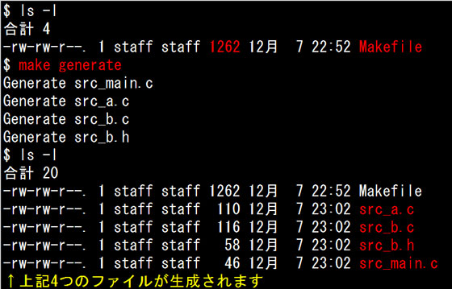
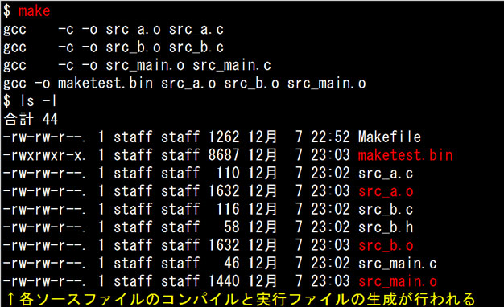
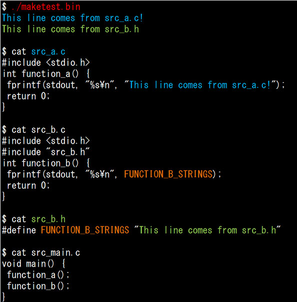
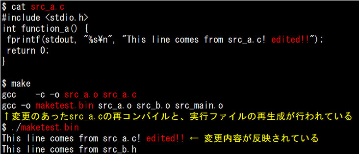
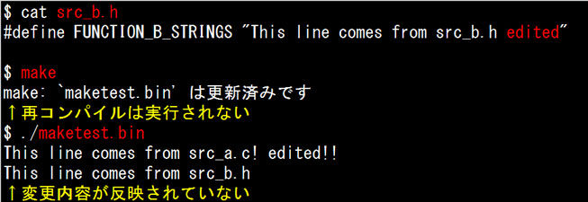
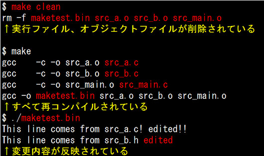
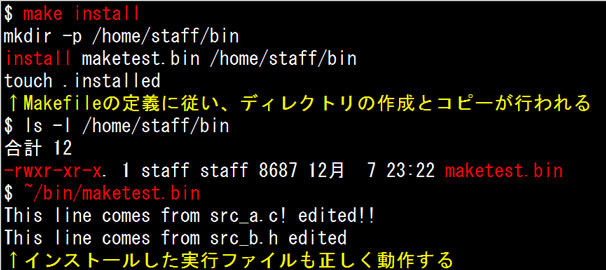
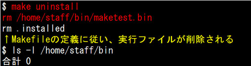

- 問題ID : 21796 makeによるソースコードからのビルドとインストール
- 履歴
正解
clean
install
uninstall
解説
Linuxで使われるコマンドラインのビルドツール make は、Makefileという指示ファイルの内容を元に、ビルド、インストール作業を自動化します。また、依存関係チェックや、再コンパイルの必要性も自動で判断して実行してくれます。
Makefileに記述するべき指示内容はターゲットと呼ばれ、ターゲットの直接指定または依存解決のための自動実行により、指定された処理を行います。一般的に定義されているターゲットとしては
・clean：ビルド時に作成されたファイルの削除
・install：ビルドしたプログラム、ライブラリの指定場所へのコピーやパーミッションの設定
・uninstall：インストールしたプログラム、ライブラリの削除
があります。
よって正解は
・clean
・install
・uninstall
です。
その他の選択肢のターゲットについては、任意に作成することはできますが一般的にMakefileに含まれるものではありませんので、誤りです。
参考
プ
ログラムをソースコードから実行可能なバイナリファイルにするには、コンパイル、リンクといった操作を行う必要があります。この一連の作業を「ビルド」と
呼びます。ビルド作業は、大規模なソフトウェアほどソースコードのファイルが多くなり、コンパイル作業の対象ファイルや回数、リンクする対象ファイルなど
をもれなく指定する必要があるため、ツールを使った自動化作業が重要になってきます。
Linuxで使われるコマンドラインのビルドツール make は、Makefileという指示ファイルの内容を元に、ビルド、インストール作業を自動化します。また、依存関係チェックや、再コンパイルの必要性も自動で判断して実行してくれます。
この時、makeコマンドは
・GNUmakefile
・makefile
・Makefile
の順で指示ファイルの検索を行います。なお、慣習として指示ファイル名は「Makefile」が多く用いられます。
以下にMakefileのサンプルを掲載します。サンプルのプログラムソースはこのMakefileから生成できます。
なお、gccやmakeコマンドがインストールされている必要がありますので、お手元の環境で実行する場合はgccおよびmakeをインストールしてから実行してください。
---サンプルここから---
OBJS = src_a.o src_b.o src_main.o
CC = gcc
PROGRAM = maketest.bin
DESTDIR = $(HOME)/bin
CHK_INSTALL = .installed
.SUFFIXES: .c .o
$(PROGRAM): $(OBJS)
$(CC) -o $(PROGRAM) $^
.c .o:
$(CC) -c $<
install: $(PROGRAM)
mkdir -p $(DESTDIR)
install $(PROGRAM) $(DESTDIR)
touch $(CHK_INSTALL)
uninstall: $(CHK_INSTALL)
rm $(DESTDIR)/$(PROGRAM)
rm $(CHK_INSTALL)
.PHONY: clean generate clean-gen
generate:
@echo Generate src_main.c
@echo "void main()" { > src_main.c
@echo " function_a();" >> src_main.c
@echo " function_b();" >> src_main.c
@echo } >> src_main.c
@echo Generate src_a.c
@echo "#include <stdio.h>" > src_a.c
@echo "int function_a()" { >> src_a.c
@echo " fprintf(stdout, "%s\n", "This line comes from src_a.c!");" >> src_a.c
@echo " return 0;" >> src_a.c
@echo } >> src_a.c
@echo Generate src_b.c
@echo "#include <stdio.h>" > src_b.c
@echo "#include "src_b.h"" >> src_b.c
@echo "int function_b()" { >> src_b.c
@echo " fprintf(stdout, "%s\n", FUNCTION_B_STRINGS);" >> src_b.c
@echo " return 0;" >> src_b.c
@echo } >> src_b.c
@echo Generate src_b.h
@echo "#define FUNCTION_B_STRINGS "This line comes from src_b.h"" > src_b.h
clean-gen:
$(RM) src_main.c src_a.c src_b.c src_b.h
clean:
$(RM) $(PROGRAM) $(OBJS)
---サンプルここまで---
注意！
コピーペーストして使用する場合は、タブ文字の扱いに注意してください。
Makefileはターゲット行（ターゲット名と：を含む行）以外は、先頭がタブ文字でなければなりません。
まずサンプルのプログラムソースを生成する「generate」ターゲットを実行してみます。空のディレクトリに上記のMakefileを配置後、以下のように実行します。

上記のようにプログラムソースが生成されたら、プログラムのビルドを行います。

各ソースファイルのコンパイルと、実行ファイルである「maketest.bin」が作成されました。このプログラムが実行できることを確認してみます。

画面表示のとおり、1行目はsrc_a.cのfunction_a()、2行目はsrc_b.cが参照するsrc_b.hに定義された文字列が出力されています。
ではここで、src_a.cの出力する文字列を変更して、再度makeコマンドを実行してみます。

変更のあったsrc_a.cだけを再コンパイルし、maketest.binを再生成していることがわかります。このように、make コマンドは変更のあったファイルだけを対象に再コンパイルする事ができます。
では、src_b.hファイルを書き換えた場合はどうでしょうか。

この場合は再コンパイルされません。プログラムのソースコードそのものではなく、参照する外部ファイルの変更はmakeコマンドでは検知できないためです。
※ 具体的には、C言語のソースコード（拡張子：.c）をコンパイルして出力されるオブジェクトファイル（拡張子：.o）のタイムスタンプと、コンパイル元の ソースコードのタイムスタンプを比較して、ソースコードが新しい場合に再コンパイルを行っています。ですが、ヘッダファイル（拡張子：.h）はソースコー ドから参照して利用するものであり、コンパイルしてオブジェクトファイルを生成するものではないため、オブジェクトファイルとのタイムスタンプ比較ができ ないのです。
こういった外部ファイルの変更時には、全てのソースコードの再コンパイルを行う必要があります。こういった目的のターゲット として「clean」が定義されています。このターゲットは通常、コンパイルして生成されたオブジェクトファイルと実行ファイルを削除します。こうしてビ ルド作業前の状態に戻し、全てのソースファイルを再コンパイルの対象とします。

「clean」ターゲット実行後に再度makeを行うことで、外部ファイルの変更内容を取り込むことができていることがわかります。
通 常、ビルドした実行ファイルは、パスの通ったディレクトリに配置します。このためのターゲットとして「install」が定義されています。このターゲッ トは、実行ファイルや設定ファイル、ライブラリを指定されたディレクトリにコピーし、実行するためのパーミッションの設定などを行います。
この時、install コマンドがよく用いられます。install コマンドは、指定されたファイルのコピーと実行するためのパーミッション設定を同時に行ってくれるコマンドです。

「install」ターゲットを使ってインストールした実行ファイルをアンインストールするためのターゲットとして「uninstall」が定義されています。このターゲットは、インストールした実行ファイル、設定ファイル、ライブラリを削除します。

このように、make コマンドでビルド、インストール、アンインストールの作業を自動で行えるようにMakefileには様々な定義が行われます。しかし、ユーザの環境は様々で
・実行ファイルをインストールしたい場所が決まっていない（/usr/binにインストールしたい、/opt配下にインストールしたい）
・ビルド時に、不要な機能を組み込まず、実行ファイルを小さくしたい
・プログラムが利用する外部ライブラリがインストールしてあるかわからない
と いった要件、環境確認の必要性が考えられます。そのため、多くのソフトウェアでは、autoconf / automake というツールを使って、configure スクリプトによるユーザの環境確認や雛形となるMakefile.inから要件に合わせたMakefileの自動生成を行うようになっています。
そのため、configure スクリプトを提供するソフトウェアでは
・ソースコードの配布物を展開
・configure スクリプトを実行し、環境の確認、Makefileの自動生成
・make コマンドによる、ソフトウェアのビルド
・make install コマンドによる、ソフトウェアのインストール
を実行するだけで、ソースコードからのインストールを完了させることができます。
それぞれのステップの意味と補足事項について解説します。
1. ./configure
コンパイルは現在の実行環境を解析し、環境に合わせて実行しなければなりません。
その為にまず、configureスクリプトを実行します。このスクリプトは実行環境に合わせたMakefileを作成してくれます。
な お、例えばカレントディレクトリにconfigureスクリプトが存在する場合は「./configure」、もしくはカレントディレクトリまでの絶対パ スを明示的に指定して実行する必要があります。これは、configureスクリプトはパスが通った（環境変数PATHで指定されたディレクトリに存在す る）コマンドでは無い為です。
2. make
makeコマンドで、先に作成したMakefileの記述に従ってソースファイルをコンパイルし、実行ファイルやライブラリを作成します。
なお、一度コンパイルを行った後にソースファイルを変更し、再度コンパイルを行う場合には、makeの前にmake cleanを実行して前回のmake時に作成された一時ファイルを削除しておく事があります。
3. make install
make installコマンドで、ファイルを適切なディレクトリに配置（インストール）します。
イ ンストール先のディレクトリにアクセス権が無い場合には、make installの前にsuコマンドでrootユーザなどの適切な権限を持つユーザになるか、sudoコマンドを用いてroot権限でmake installを実行します。（sudo make install）
別の方法として、./configure実施時に、--prefixを使ってインストール先を実行ユーザーの権限のあるディレクトリに変更して実行することでも対応できます。
例)user1のホームディレクトリをインストール先に指定する
./configure --prefix=/home/user1
なお、インストール後にプログラムの起動が失敗する場合、その原因として、環境変数LD_LIBRARY_PATHが正しく設定されていない、という可能性があります。
LD_LIBRARY_PATHが正しく設定されていないと、プログラムの実行に必要な共有ライブラリを読み込むことができません。
例 えば、「/home/ping-t/lib」に共有ライブラリが存在する場合、「export LD_LIBRARY_PATH=$LD_LIBRARY_PATH:/home/ping-t/lib」などとして、共有ライブラリの検索パスを追加し ておく必要があります。なお、lddコマンドで該当プログラムを指定すれば、そのプログラムの共有ライブラリへの依存関係を表示できますので、それを参考 に検索パスを修正する事もできます。